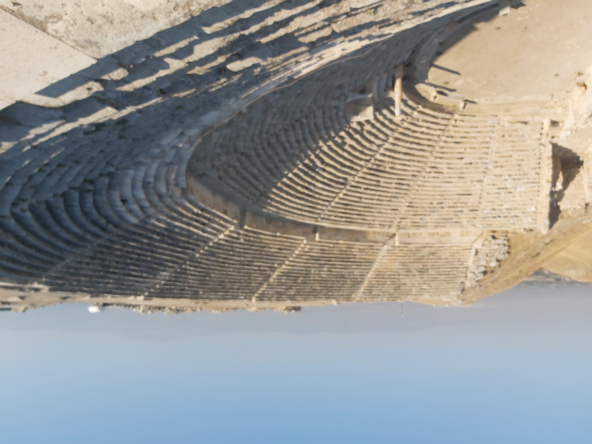

Laodicea (Laodicea on the Lycus)

- Find Name
- Laodicea (Laodicea on the Lycus)
- Description
- A wealthy Hellenistic and Roman city in the Lycus Valley of southwestern Asia Minor, near modern Denizli, founded by Antiochus II and named for his wife Laodice. It stood at a crossroads of trade, grew rich on banking, glossy black wool cloth, and a famous medical school and eye ointment, and after the earthquake of AD 60 it famously rebuilt itself from its own resources, refusing imperial aid. Large-scale excavations since 2003 have uncovered theatres, a stadium, baths, temples, colonnaded streets, a council hall (bouleuterion) bearing early Christian symbols, a fourth-century church uncovered in 2011, and the water system whose lukewarm aqueduct water — hot from Hierapolis, cold from Colossae, tepid by the time it reached Laodicea — matches the letter's most famous image.
- Historical Period
- Hellenistic to Byzantine, 3rd century BC onwards
- Evidence Class
- Direct
- Interpretations
- Scholars agree the site near Denizli is biblical Laodicea; the identification is secure. The lukewarm-water explanation is the standard reading of Revelation 3:16 and fits the aqueduct evidence, but the letter does not itself mention the water system, so the link is offered as illumination, not as a proven allusion. No first-century church building has been identified.
- Alternative Names
- Laodicea ad Lycum; Laodicea on the Lycus
- Related Places
- Related Books
- Related People
- Scripture Illuminated
- Biblical Significance
- Laodicea is the last of the seven churches: 'because thou art lukewarm, and neither cold nor hot, I will spue thee out of my mouth' (Revelation 3:16), addressed to a church that said 'I am rich, and increased with goods, and have need of nothing' while being, in the letter's judgment, 'wretched, and miserable, and poor, and blind, and naked' (Revelation 3:17). Paul had already written of Epaphras's 'great zeal' for the Laodiceans (Colossians 4:13) and ordered his letter to Colossae to be read in the church of the Laodiceans (Colossians 4:16). The excavated city — rich, self-sufficient, and supplied with tepid water — is the letter's illustration in stone.
- Artifact Date
- Founded by Antiochus II, 3rd century BC; Roman city rebuilt after the AD 60 earthquake without imperial aid
- Current Location
- In situ, Turkey
- Date Discovered
- Large-scale excavation from 2003 (Pamukkale University, Celal Simsek); earlier work from the 19th century
- Discovery Location
- Near Denizli, Lycus Valley, southwestern Turkey
- Timeline Era
- Early Church
Awaiting Review Not yet checked against scholarly sources. Treat its claims as provisional until this entry is reviewed. About verification
Last reviewed: not yet reviewed